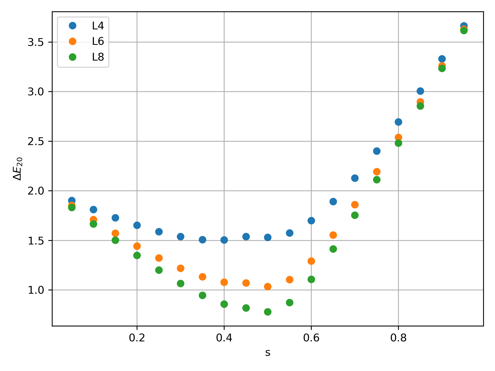

1. Exact Diagonalization¶
Consider the example of a 1D transverse field Ising model with Hamiltonain defines as
where \(\left<ij\right>\) denotes nearest neighbor interaction, and \(\sigma^{x,z}\) is the pauli-matrices.
The model undergoes a phase transition at \(H_x^c/J = 1\) with avoid level crossing. For further information, see insert url!
Here, we are interesting to observe this avoid level crossing where the gap closes with increasing system size. For this, we want to get the low-level energy spectrums.
Generally, the native way to calculate the energy specturm of this Hamiltonian is through the product of local pauli-matrices. However, the size of this many-body Hamiltonian growth exponentially with size of chain \(L\) as \(2^{L}\). It is not pratical to store this large Hamiltonain.
Notice that this many-body Hamiltonain is very sparse, with lots of elements equal to zero. Thus it is very useful to use LinOp to represent this Hamiltonain, and call Lanczos_ER to get the low-level energies.
1.1. Bit representation of basis states¶
First thing we want to do is to represent the basis states using bit-representation. Here, let’s choose the \(z\) -basis. For example:
This each configuration (basis state) can be identify with a integer ID.
Now, since we want to consider the Hamiltonian as operation that acting on the input vector and mapping to the output vector, we can think of pauli-matrices \(\sigma^{x,z}\) acting on the basis state, and map from input state to output state with coefficient \(c\) as \(c|\psi_{out}> = \sigma^{x,z}|\psi_{in}>\) .
For example:
The first example, \(J\sigma_0^{z}\sigma_1^{z}\) map from basis with ID=1 to ID=1 with coefficient \(-J\), which is a diagonal elements in the many body Hamiltonian. The second example which \(H_x\sigma_0^{x}\) operate on state with ID=1 resulting as a state with ID=0 and corresponding coefficient \(H_x\), which is a off-diagonal elements in the many-body Hamiltonian.
With aformentioned rule, we are now ready to implement the TFIM Hamiltonian using LinOp class.
1.2. Implementation¶
Let’s inherit the LinOp class, and implement the aformentioned mapping in the overload of matvec:
In python:
1import cytnx as cy
2
3class Hising(cy.LinOp):
4
5 def __init__(self,L,J,Hx):
6 cy.LinOp.__init__(self,"mv",2**L,cy.Type.Double,cy.Device.cpu)
7 ## custom members:
8 self.J = J
9 self.Hx = Hx
10 self.L = L
11
12 def SzSz(self,i,j,ipt_id):
13 return ipt_id,(1. - 2.*(((ipt_id>>i)&0x1)^((ipt_id>>j)&0x1)))
14
15 def Sx(self,i,ipt_id):
16 out_id = ipt_id^((0x1)<<i)
17 return out_id,1.0
18
19 ## let's overload this with custom operation:
20 def matvec(self,v):
21 out = cy.zeros(v.shape()[0],v.dtype(),v.device());
22 for a in range(v.shape()[0]):
23 for i in range(self.L):
24 oid,amp = self.SzSz(i,(i+1)%self.L,a)
25 out[oid] += amp*self.J*v[a]
26
27 oid,amp = self.Sx(i,a)
28 out[oid] += amp*(-self.Hx)*v[a]
29 return out
In C++:
1namespace cy=cytnx;
2class Hising: public cy::LinOp{
3
4 public:
5 cytnx_double J,Hx;
6 cytnx_uint32 L;
7
8 Hising(cytnx_uint32 L, cytnx_double J, cytnx_double Hx):
9 cy::LinOp("mv",pow(2,L),Type.Double,Device.cpu) //rememeber to invoke base class constructor
10 {
11 //custom members
12 this->J = J;
13 this->Hx = Hx;
14 this->L = L;
15 }
16
17 double SzSz(const cytnx_uint32 &i, const cytnx_uint32 &j, const cytnx_uint32 &ipt_id, cytnx_uint32 &out_id){
18 out_id = ipt_id;
19 return (1. - 2.*(((ipt_id>>i)&0x1)^((ipt_id>>j)&0x1)));
20 }
21
22 double Sx(const cytnx_uint32 &i, const cytnx_uint32 &ipt_id, cytnx_uint32 &out_id){
23 out_id = ipt_id^((0x1)<<i);
24 return 1.0;
25 }
26
27 // let's overload this with custom operation:
28 Tensor matvec(const Tensor &v) override{
29 auto out = zeros(v.shape()[0],v.dtype(),v.device());
30 cytnx_uint32 oid;
31 double amp;
32
33 for(cytnx_uint32 a=0; a<v.shape()[0];a++){
34 for(cytnx_uint32 i=0; i<this->L; i++){
35 amp = this->SzSz(i,(i+1)%this->L,a,oid);
36 out(oid) += amp*this->J*v(a);
37
38 amp = this->Sx(i,a,oid);
39 out(oid) += amp*(-this->Hx)*v(a);
40 }
41 }
42 return out;
43 }
44};
Note that here, we defone two member functions SzSz() and Sx() that operate on site \(i,j\) with basis ID \(ipt_id\) and return the output basis ID and corresponding coefficients.
Inside the overload matvec, we then traversal all the basis states coefficients in input vector v, and using SzSz() and Sx() to calculate the mapping to the output vector out.
The class constructor takes three arguments: L, the size of ising chain; J, the ZZ coupling and Hx, the transverse field.
Hint
Here, we consider periodic boundary condition, you can modify the boundary condition or adding additional terms by properly modify the matvec.
Now, we can then using Lanczos method to get the low-level energy spectrum of this Hamiltonian. Since we are interesting in the property of avoid level crossing, let’s get the lowest 3 energy states.
In python:
1L = 4
2J = -1
3Hx = 0.3
4H = Hising(L,J,Hx)
5v = cy.ones(16)
6print(cy.linalg.Lanczos_ER(H,3))
In c++:
1cytnx_uint32 L = 4;
2double J = -1;
3double Hx = 0.3;
4auto H = Hising(L,J,Hx);
5cout << cy::linalg::Lanczos_ER(&H,3) << endl;
Output>>
Total elem: 3
type : Double (Float64)
cytnx device: CPU
Shape : (3)
[-4.09296e+00 -4.08806e+00 -8.29256e-01 ]
Total elem: 48
type : Double (Float64)
cytnx device: CPU
Shape : (16,3)
[[-6.98371e-01 9.23730e-02 -6.99613e-01 ]
[-5.41014e-02 -2.44076e-01 -5.13407e-02 ]
[-5.41014e-02 -2.44076e-01 -5.13407e-02 ]
[-1.58618e-02 -3.53197e-01 -4.22330e-08 ]
[-5.41014e-02 -2.44076e-01 -5.13407e-02 ]
[-8.02201e-03 -6.06493e-02 -1.74782e-08 ]
[-1.58618e-02 -3.53197e-01 -3.78828e-08 ]
[-5.41017e-02 -2.44076e-01 5.13405e-02 ]
[-5.41014e-02 -2.44076e-01 -5.13407e-02 ]
[-1.58618e-02 -3.53197e-01 -3.79224e-08 ]
[-8.02201e-03 -6.06493e-02 -1.71013e-08 ]
[-5.41017e-02 -2.44076e-01 5.13405e-02 ]
[-1.58618e-02 -3.53197e-01 -4.22106e-08 ]
[-5.41017e-02 -2.44076e-01 5.13405e-02 ]
[-5.41017e-02 -2.44076e-01 5.13405e-02 ]
[-6.98374e-01 9.23730e-02 6.99610e-01 ]]
1.3. Results¶
Here, we show the result using the aformentioned implementation. We define a common parameter \(s\) such that \(J = -s\) and \(Hx=(1-s)\), and we plot the second gap \(\Delta E_{20}\) that shows the avoid level crossing:
{kind=link}
The \(L\) here is the system size.
Hint
The complete example code can be found in Github repo under example/ED folder.